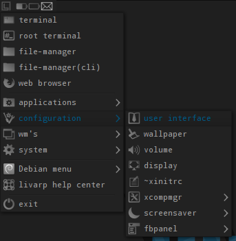
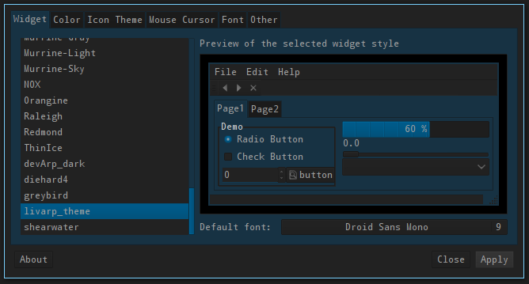

lang fr|gb

interface utilisateur
l'interface utilisateur est configurée grâce à lxappearance. une entrée de menu est présente dans chaque menu du livarp et vous permet de choisir votre thème GTK, votre police et votre thème d'icônes.

